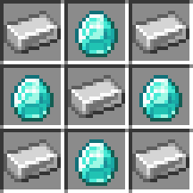
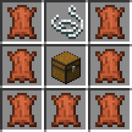
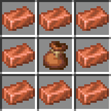
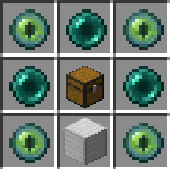
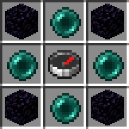
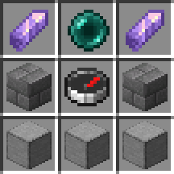
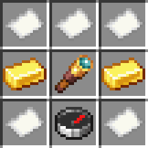

Guia do Jogador
Enciclopédia do WrathSMP — sistemas, regras e recursos para jogadores Java e Bedrock.
O WrathSMP é um servidor de sobrevivência com progressão própria: os jogadores sobem do nível 1 ao 60, exploram o mundo pelo Codex e evoluem habilidades com o mcMMO. Este guia organiza os sistemas principais em seções independentes para consulta rápida durante o jogo.
Este guia cobre recursos disponíveis para jogadores Java e Bedrock. Alguns itens especiais usam modelos e efeitos visuais enviados pelo servidor; a aparência pode variar entre plataformas. Receitas adicionais podem ser encontradas no livro de receitas e nos avanços do jogo.
📈 Progressão
A progressão combina níveis de jornada, habilidades, descobertas do Codex e conquistas. Cada sistema tem seus próprios contadores e recompensas.
Jornada de níveis — 1 → 60
Todos os jogadores seguem a mesma jornada. Os primeiros níveis sobem rápido; os últimos pedem mais tempo.
Como ganhar XP:
- Jogando — XP a cada 5 minutos.
- Caçando — quanto mais forte o mob, maior a recompensa.
- Minerando — minérios mais raros dão mais XP.
- Avanços e descobertas do Codex — cada um rende XP de jornada.
💡 Três contadores de XP: a barra verde vanilla, os níveis de habilidade e a jornada 1–60 são separados. Recompensas do Codex e dos avanços alimentam a jornada.
Recompensas por nível:
| Nível | O que você recebe |
|---|---|
| 5 | 2× Maçã Dourada |
| 10 | 3× Maçã Dourada + 1× Diamante |
| 15 | 8× Esmeralda + acesso ao Nether |
| 20 | 3× Diamante + 16× Salmão Assado |
| 25 | Regeneração I (90s) + Velocidade II (2 min) |
| 30 | 4× Diamante + 12× Garrafas de XP + acesso ao End |
| 35 | 6× Maçã Dourada + Força II (2 min) |
| 40 | 6× Diamante + 24× Garrafas de XP |
| 45 | 8× Maçã Dourada + 16× Lapis-lazúli |
| 50 | 6× Diamante + Totem da Imortalidade |
| 55 | 8× Diamante + 2× Carapaça de Shulker |
| 60 | 10× Diamante + 8× Maçã Dourada + 4× Sucata de Netherite — nível máximo, com celebração global 🎉 |
- Todo nível cura e enche sua fome por completo, além de mostrar o aviso de subida.
Codex — o compêndio de descobertas 📖
Abra com /codex. Cada descoberta desbloqueia uma página de lore permanente e rende XP. Ao encontrar algo novo, aparece o banner “CÓDICE ATUALIZADO”.
| Categoria | O que reúne | Por descoberta | Ao completar |
|---|---|---|---|
| 🟣 Monstros | 33 inimigos hostis | +100 XP | +5000 XP |
| 🟢 Vida Selvagem | 37 animais e criaturas | +100 XP | +4000 XP |
| 🔴 Lendas & Monstruosidades | 9 bosses e criaturas lendárias | +1000 XP | +15000 XP + Totem |
| 🌿 Biomas | 48 paisagens do Overworld | +5 XP | +1000 XP |
| 🌌 Biomas Exóticos | 19 terras raras, Nether, End e Vazio | +10 XP | +800 XP |
| 💎 Relíquias | 24 itens difíceis de obter | +80 XP | +1500 XP |
| 🐺 Domesticação | 11 animais domáveis e montarias | +100 XP | +1000 XP |
| 🎵 Música | 19 discos | +50 XP | +1000 XP |
| 🏺 Arqueologia | 42 fragmentos e moldes | +30 XP | +1200 XP |
| 🧪 Alquimia | 20 efeitos e poções especiais | +40 XP | +1000 XP |
| ⚔️ Mestres mcMMO | 17 habilidades no nível 100 | +150 XP | +2000 XP |
| ⏳ Tempo de Casa | 6 marcos, de 1 a 100 horas | +80 XP | +800 XP |
| 🎣 Pescaria | 10 peixes e tesouros fisgados | +50 XP | +1000 XP |
- Descobertas ainda bloqueadas aparecem como
??. - Desbloqueie derrotando mobs, domesticando animais, visitando biomas, obtendo itens, preparando poções, subindo habilidades, acumulando tempo de jogo e pescando.
Habilidades ⚔️
- Nível 100 é o máximo em todas as habilidades, alcançado apenas jogando.
- Cada habilidade tem seu próprio nível.
- Veja o progresso de cada uma com
/fishing,/mining,/swords…
Raças e origens 🧬
Escolha uma raça no menu do NPC Mudar de Raça no Spawn. Há 12 opções: Anão, Elfo, Goblin, Halfling, Humano, Sereiano, Orc, Tiefling, Troll, Morto-Vivo, Vampiro e Lobisomem. Cada uma oferece habilidades próprias; leia a descrição no menu antes de escolher. A raça também aparece abaixo do nome dos jogadores.
Conquistas — XP por avançar 🏆
Cada conquista rende XP automaticamente, uma única vez por jogador:
| Tipo | XP |
|---|---|
| História | 25 |
| Aventura | 30 |
| Agricultura e animais | 30 |
| Nether | 40 |
| Fim | 60 |
| Desafios especiais | 80–300 |
- O chat mostra
[+N XP] Conquista desbloqueada: Nome da Conquista.
🏡 Base e itens
Reúne os sistemas de proteção de base, armazenamento, teleporte e itens especiais. Cada subsistema tem regras próprias e pode ser usado de forma independente.
Proteção de bases 🏠
- Reivindique o chunk onde está com
/c. Os chunks da base precisam se tocar. - Limites: 32 chunks, 2 regiões e 10 membros por base.
- A base começa com 24 horas de energia para você construir a powercell. Sem ela, a energia cai e a base acaba dissolvida.
- Powercell: monte a receita no centro de um baú único (não duplo) dentro da base e feche o baú.

| Combustível | Energia |
|---|---|
| Diamante | 48 h |
| Ouro | 8 h |
| Ferro | 6 h |
| Carvão | 3 h |
| Cobre | 2 h |
| Esmeralda | 12 h |
| Lápis-lazúli, ametista, quartzo e pó de pedra luminosa | 3–4 h |
| Redstone, carvão vegetal e bambu | 2 h ou menos |
| Vara de blaze, pérola do Ender e prismarina | 4–6 h |
| Sucata de netherita | 96 h |
| Blocos de metais, gemas e minerais | de 18 h a 144 h |
| Troncos | 30–45 min |
| Colheitas e plantas | 20–60 min |
- Também podem ser usados troncos, bambu e colheitas, para que lenhadores e agricultores mantenham suas bases. Os valores indicados são antes do ajuste pelo tamanho da base. O consumo cresce conforme o número de chunks reivindicados.
- Ficar sem energia por muito tempo dissolve a base.
- Permissões separadas para dono, membro e visitante: quebrar, colocar, interagir, PVP, redstone, portas, trocas, mobs, fogo, TNT, voo e mais.
- Convide, aceite, expulse, bana e desbane jogadores; tranque a base, renomeie e veja as bordas com
/c show. - A base tem auditoria de ações (limpeza após 30 dias) e uma bossbar com nome e energia ao entrar.
Mochilas 🎒
Mochilas não são entregues automaticamente ao entrar. Segure uma mochila e clique com o botão direito para abrir. As melhorias preservam os itens guardados. O sistema também oferece um guia visual de receitas no jogo.
Mochila inicial: Couro
Faça na bancada de trabalho:

Melhorias
Para cada melhoria até Diamante, coloque a mochila atual no centro da bancada e cerque-a com 8 materiais do próximo nível:

| Mochila atual | Próxima mochila | Material (8 unidades) |
|---|---|---|
| Couro | Cobre | Lingote de cobre |
| Cobre | Ferro | Lingote de ferro |
| Ferro | Ouro | Lingote de ouro |
| Ouro | Diamante | Diamante |
Para a melhoria final, use a mesa de ferraria: Mochila de Diamante + molde de melhoria de netherita + lingote de netherita → Mochila de Netherita.
Mochila de Terra
É uma alternativa menor, criada ao cercar uma Mochila de Couro com 8 blocos de terra na bancada. Essa receita é uma redução de nível, não faz parte da sequência de melhorias.
Enderpack
A Enderpack é uma mochila especial, criada na bancada:

Também é possível colocar 1 Enderpack + 1 Pérola do Ender em qualquer espaço da bancada para receber 2 Enderpacks com o mesmo armazenamento compartilhado. Guarde isso em mente: são dois acessos ao mesmo inventário, não duas cópias dos itens.
Mochilas não podem ser colocadas dentro de outras mochilas.
Pedras de teleporte 🪨
Pedras de teleporte craftáveis, com aparência de pedra de âncora.

- Clique com o direito para abrir o menu de destinos e viajar.
- Cada waystone é privada por padrão. Para renomeá-la, fique ao lado e use
/tw setname <nome>(sem espaços); para permitir que qualquer pessoa viaje até ela sem ter visitado antes, olhe para a pedra e use/tw setpublic true. Usefalsepara torná-la privada novamente. - Podem ser quebradas e levadas para outro lugar.
Pedra do Regresso 🏡
Uma pedra que guarda um ponto de retorno escolhido por você. Agache e clique com o botão direito antes de usá-la para vincular sua localização; depois, clique com o botão direito para voltar. A ativação leva 5 segundos e o item tem um tempo de recarga de 60 segundos. Cada pedra fica vinculada ao primeiro jogador que a usar.
Receita na bancada:

Missões e contratos 📜
No Spawn, interaja com o NPC Missões para abrir o menu de contratos.
- Diárias: 2 missões fáceis, 2 médias e 2 difíceis por ciclo diário. Os objetivos variam entre mineração, combate, coleta, criação de animais, pesca, exploração, culinária e outras atividades; várias exigem uma quantidade planejada de recursos ou ações.
- Semanais: 2 de cada dificuldade por ciclo semanal, com tarefas de maior duração e metas acumuladas.
- Marcos globais: objetivos únicos da jornada, como contribuir com produção, exploração, combate e contratos. Eles ficam disponíveis no menu de missões e não substituem as descobertas permanentes do Codex.
- Concluir missões concede recompensas e contribui para a progressão de cada trilha, que também concede insígnias em determinados níveis. As missões concluídas permanecem visíveis no menu.
- Os objetivos disponíveis mudam conforme o ciclo; confira o menu para requisitos e recompensas atuais.
Economia e comércio 💎
- A moeda do servidor é a esmeralda mantida na carteira. As missões e a venda de itens são formas de obter dinheiro.
- No Spawn, converse com o NPC Mercado para abrir a loja ou vender itens. O NPC Preço Rotativo abre a seleção de produtos com preço especial.
- Para comprar ou vender com outros jogadores, use os NPCs Leilão e Pedidos no Spawn. Consulte os menus para publicar, comprar, atender pedidos ou recolher transações.
- Nem todo item é vendável; os valores podem variar conforme o produto e eventos de loja.
- O sistema de bancos entre jogadores está desativado; o dinheiro recebido vai para sua carteira.
NPCs do Spawn 🧑🤝🧑
Aproxime-se e interaja com o NPC para abrir o serviço; quando houver mais de uma opção, use o botão indicado pelo próprio NPC.
| NPC | Serviço |
|---|---|
| Pedidos | Quadro de pedidos de compra entre jogadores |
| Leilão | Leilões e anúncios de itens entre jogadores |
| Mercado | Loja geral (interação principal) e venda de itens (interação secundária) |
| Preço Rotativo | Loja de itens com preços rotativos |
| PvP | Abre a opção de alternar o PvP |
| Skins | Menu de skins |
| Capas | Menu de capas |
| Guildas | Administração e menu de equipes |
| Missões | Menu de missões e contratos |
| Trails | Menu de rastros visuais |
| Mudar de Raça | Menu para trocar sua origem/raça |
| Guia | Orientação para começar; indica o quadro de Missões e o primeiro contrato |
Os nomes refletem o cadastro atual do Spawn; serviços e aparência podem mudar com atualizações.
Bússola de Explorador 🧭
Localiza estruturas do mundo. Botão direito vai para o próximo alvo; botão esquerdo, para o anterior. A agulha aponta para o alvo e as coordenadas aparecem no chat. Há 2,5s entre os cliques.

Alvos (16): Vila, Vila Medieval, Cidade Antiga, Câmaras de Prova, Pirâmide do Deserto, Mansão, Cabana da Bruxa, Posto de Saqueador, Fortaleza, Monumento Oceânico, Cripta, Mina, Fortaleza do Nether, Bastião, Cidade do End e Castelo do End. Alguns alvos só podem ser procurados na dimensão correspondente. A receita é aprendida automaticamente.
⚰️ Túmulos
Os túmulos guardam itens e experiência depois da morte, evitando que o conteúdo se perca no local da queda.
Ao morrer, seus itens e 70% do XP ficam num túmulo no local da morte, em vez de espalhados pelo chão.
- O túmulo é uma cabeça de jogador com holograma do dono, tempo restante, causa da morte e proteção.
- Duração: 24 horas. Depois, o conteúdo cai no chão.
- Limite: 18 túmulos por jogador.
- Local seguro: se morrer no ar, na lava, no void ou dentro de um bloco, o túmulo vai para o último lugar seguro.
- Proteção: nos primeiros 5 minutos, só você e quem te matou podem abrir; depois, qualquer pessoa pode acessar. Explosões não destroem o túmulo.
- Ao renascer, você recebe uma bússola que aponta para seu túmulo por 5 minutos.
/graveslista seus túmulos.- O inventário é preservado na ordem original. O túmulo armazena 70% do XP que você tinha ao morrer.
- Se o túmulo não puder ser criado, você mantém o inventário.
⚔️ Combate e PvP
O combate conta com mobs de nível escalado, um Dragão do End adaptativo e PvP opcional, desligado por padrão.
- Raça no nametag — sua raça aparece na linha abaixo do seu nome, junto à vida. Ela não aparece mais como prefixo na lista de jogadores.
- Níveis dos mobs — o nível acompanha o nível de jornada do jogador próximo, varia em até 2 níveis e aumenta em 1 por anel de 750 blocos após os primeiros 250 blocos do ponto de spawn da dimensão. O limite é nível 60. Ao mirar, acompanhar ou atacar um mob, o nametag mostra nível, nome e vida atual/máxima; animais passivos mostram essas informações quando são atacados.
- Dragão do End escalado 🐉 — vida, dano e resistência crescem com o número de jogadores. Ele usa raios, sopro e bolas de fogo, e as recompensas são divididas pelo dano causado. Cristais do End explodem com mais força e causam fogo.
- PvP opt-in — começa desligado. Use o NPC PvP no Spawn para ligar ou desligar. Sem PvP, você não dá nem recebe dano de jogadores (leva knockback), e animais domados, fogo/lava próximos e efeitos hostis também são protegidos. Após entrar em combate, são 30s para poder alternar. Sair do jogo durante o combate não mata seu personagem.
- Ovos de spawn — 2% de chance ao derrotar um mob, inclusive os de spawners.
- Efeitos de adornos — usar quatro peças de armadura com o mesmo padrão de trim concede um efeito passivo associado ao padrão. Exemplos: velocidade, pressa, visão noturna, resistência ao fogo e regeneração.
- Cabeças de mobs — chance de cair ao derrotar; Looting aumenta a chance. Também dá para fazer mini-blocos na pedra de corte ou comprar do vendedor ambulante.
🌍 O mundo
A geração personalizada adiciona estruturas, dimensões com acesso por nível, mapa 3D e recompensas ligadas à exploração.
Terreno e exploração
A geração mantém a progressão de sobrevivência familiar, com mais detalhes naturais nos biomas e terrenos diferentes entre as dimensões. O Nether tem áreas mais amplas e rotas de viagem variadas; o End ganha ilhas e formações mais dramáticas.
- Há muitas estruturas adicionais ou reformuladas para descobrir: vilas, tavernas, ruínas, masmorras, fortalezas, minas, portais, monumentos e assentamentos no oceano.
- A geração de biomas acrescenta detalhes como árvores caídas, clareiras, rochas e vegetação, sem substituir a identidade dos biomas conhecidos. Algumas vilas e masmorras oferecem mapas que ajudam a localizar outros pontos de interesse.
Datapacks de aventura e construção
- A Jornada do Herói (Hero's Journey): uma coleção de 16 Olhos especiais ligados a exploração e desafios. As pistas aparecem nos avanços com o tema Gateway / A Jornada do Herói. É preciso encontrar 12 olhos diferentes para abrir o portal do End; reunir os 16 completa o avanço Monomito. É conteúdo extra de exploração; não substitui a progressão de níveis do servidor.
- Ferramentas de Construção do Jake (Jake's Build Tools): adiciona ferramentas utilitárias para construção, como cinzel, chave de blocos, martelo, colher de pedreiro (trowel), fita métrica, escada de corda, magneto de itens, bolsa de mobs e frasco de experiência, além de itens especiais como balde e pacote do vazio. Cada ferramenta tem regras próprias; confira sua descrição e o avanço/receita correspondente antes de usar. O livro Owner's Manual reúne orientação do datapack.
- A geração personalizada acrescenta estruturas, masmorras, minas, ruínas e povoados em diferentes biomas e dimensões. Esses conteúdos aparecem naturalmente durante a exploração e não precisam ser instalados pelo jogador.
Dimensões
| Dimensão | Acesso |
|---|---|
| 🌋 Nether | Nível 15 |
| 🔮 End | Nível 30 — explore as Cidades do End e seus cofres |
O portal avisa o nível necessário. O End também usa o desafio de exploração dos Olhos especiais.
Mapa e conexão
- Mapa 3D no navegador:
http://<ip-do-servidor>:8100. - Terreno distante: clientes compatíveis podem visualizar terreno além da distância normal; o alcance configurado chega a 512 chunks no Overworld e no End e 64 no Nether.
Tesouros e recompensas do mundo
- Baús de tesouro aparecem para jogadores ativos a cada 20–40 minutos, a 16–40 blocos de distância. Cada jogador pode ter 1 por vez; o baú desaparece após 10 minutos.
- O baú fica reservado para você por 30 segundos. Depois, qualquer pessoa pode abri-lo. Abrir e fechar o baú consome a recompensa, então confira o conteúdo antes de sair.
- Há quatro raridades: comum, rara, lendária e mítica. A chance de um baú ser um mimic depende da raridade e é maior nos míticos. Derrotá-lo pode render o dobro do saque e 50 XP; alguns são amistosos, enquanto outros lutam ou tentam fugir. Parte das recompensas é liberada durante o combate.
- Recompensas de pesca: ao pescar, há chance de receber um baú-recompensa animado com itens e outras surpresas.
- Cofres das Cidades do End garantem elytra para mais de um jogador.
✨ Qualidade de vida
Ajustes de conveniência que reduzem tarefas repetitivas sem mudar as regras centrais de sobrevivência e progressão.
🌱 Agricultura
- Colher plantações maduras concede XP.
- Plantações continuam avançando enquanto você está offline; animais de criação também podem amadurecer nesse período e a lã das ovelhas volta a crescer.
- Receitas alternativas permitem obter muitos drops de mobs sem precisar derrotá-los, como couro, penas, slime, canas de blaze, pólvora e itens de criaturas hostis.
- Há receitas adicionais para aproveitar melhor materiais de construção, incluindo blocos e itens de Nether.
🛠️ Equipamentos e encantamentos
- Bigornas sem “Muito Caro!” — o limite de 40 níveis não existe; o custo real de XP é exibido e cobrado.
- Nomes coloridos na bigorna — use códigos de cor compatíveis ao renomear um item.
- Recuperação de Encantamentos — permite guardar encantamentos de itens em livros usando a pedra de amolar.
♻️ Reciclagem
- Agache e clique com o direito numa mesa de ferraria para abrir o reciclador.
- Coloque uma ferramenta, arma ou armadura e clique em Reciclar Item: você recebe de 40% a 80% dos materiais de crafting, sorteados a cada reciclagem.
- Funciona com itens encantados, danificados ou renomeados. Itens com modelo customizado são bloqueados.
- Itens sem receita de crafting têm retorno próprio: netherita → sucata de netherita + diamante, malha → ferro, tridente → fragmento de prismarinho, elytra → membrana de phantom.
- Selas e armaduras de cavalo e de lobo também podem ser recicladas.
🔥 Blocos e utilidades
- Forno em cima de lava funciona sem combustível — a fonte de lava embaixo é consumida.
- Creepers não destroem mais blocos — a explosão continua machucando jogadores e mobs, mas não abre crateras nem apaga construções.
- Pedra de corte machuca quem pisa nela: 1 coração por passo.
- Beacons funcionam através de vidro tingido.
- É possível colocar água no End com baldes.
- Mineração em cadeia — agache e quebre com a ferramenta certa para minerar blocos conectados compatíveis. O desgaste da ferramenta acompanha os blocos quebrados.
- Cortes e receitas expandidos — a pedra de corte aceita muitas receitas adicionais para trabalhar madeira, pedra e outros materiais com menos desperdício.
- Luz dinâmica — tochas e lanternas na mão iluminam ao redor.
- Localizador de slime chunks — use uma bola de slime: clique com o direito para alternar a visualização dos chunks de slime no mundo ou agache e clique com o direito para abrir o mapa.
- Fogueiras curam lentamente num raio de 3 blocos.
- Decaimento de folhas — folhas sem tronco próximo desaparecem mais rápido e ainda podem deixar seus drops.
- Votação de sono — deitar na cama inicia uma votação com bossbar; metade dos jogadores pula a noite. Tempestades também podem ser puladas.
- Interações visíveis — animações mostram itens e processos em várias bancadas e blocos funcionais, como crafting, fornos e encantamentos.
- Mobs que pegaram itens voltam a despawnar normalmente.
- Trocas de aldeões podem ser rerroladas na própria tela de troca.
- Poses e interações sociais — sente-se, deite-se ou rasteje, e use emotes para interagir com outras pessoas. Também há skins, capas, rastros visuais e sprays personalizados.
💬 Chat, guildas e interface
A interface social exibe nível, guilda e estado de PvP; os menus reúnem administração de equipes e personalização.
- O chat público mostra seu nível e, quando você pertence a uma guilda, sua tag ao lado do nome. Mensagens privadas e conversas de guilda continuam disponíveis pelos menus e recursos sociais.
- A opção de PvP aparece na lista de jogadores e no placar. Os nametags acima dos jogadores mostram nível, tag da guilda e estado do PvP; abaixo do nome aparecem sua raça e vida.
- A lista de jogadores mostra o nível e a dimensão; o placar alterna entre visão geral, profissões e combate. A visão geral inclui progresso de nível, poder total do mcMMO, saldo, guilda, tempo jogado e PvP.
- O NPC Guildas dá acesso à administração da equipe. Guildas podem ter cargos, permissões, chat, banco, baú compartilhado (que pode aumentar de tamanho com melhorias), alianças, missões e evolução; os recursos disponíveis aparecem nos menus.
- Aparência pessoal: skins, capas, rastros de partículas e sprays decorativos. Alguns efeitos gráficos podem variar entre clientes Java e Bedrock.
- Exibição de itens: agache e interaja com um quadro de item colocado na face superior de um bloco para deixar o item flutuando como decoração. Clique no item exibido para removê-lo.
- O canal público de HelpOP está desativado.
🧾 Comandos essenciais
Referência rápida dos comandos mais usados no dia a dia. Alguns exigem permissão de administrador ou só funcionam em certas situações.
| Comando | Para quê |
|---|---|
/codex |
compêndio de descobertas |
/fishing |
progresso da habilidade (ou /mining, /swords…) |
/c |
proteção de bases |
/graves |
seus túmulos e teleporte |
/sb |
alterna o placar |
🔎 Ver também
Fim do guia. Bom jogo. 🎉